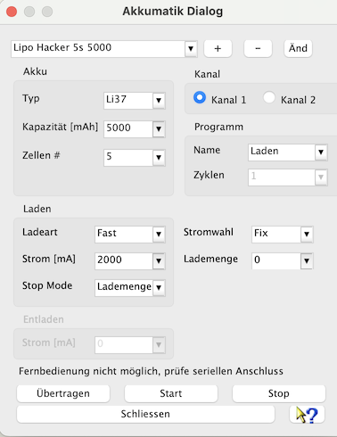

Der Akkumatik-Gerätedialog dient zum Erstellen und verwalten von Ladeprogrammen in beliebiger Anzahl. Die Programmdaten werden in einer Datei mit dem Namen Akkumatik_Settings.xml abgelegt. Diese Datei wird auch erzeugt, wenn sie noch nicht vorhanden ist. Bitte in der allgemeinen Hilfe unter "Verwendete Verzeichnisse" nachsehen, wie das Basisverzeichnis der Einstellungen für das verwendete Betriebssystem definiert ist. Bei jedem Schliessen des Dialoges werden alle vorgenommenen Änderungen, ohne zu fragen, abgespeichert. Das zuletzt sichtbare Programm wird beim nächsten Öffnen wieder angezeigt.
Nachdem die serielle Schnittstelle über den Geräteauswahldialog eingestellt ist und dieser Gerätedialog aufgerufen wurde, können durch "Übertragen" das aktuell im Dialog sichtbare Programm an das Gerät für den gewählten Kanal übergeben werden. Wird kein Programm übertragen und dennoch Start gedrückt, startet das Gerät den aktuellen Programmspeicher für den ausgewählten Kanal. Mit Stop wird ein mögliches laufendes Programm auf dem gewählten Kanal gestoppt.

Beim Anlegen eines neuen Ladeprogramms, "Plus", wird ein fortlaufender generischer Name vergeben. Dieser Name kann über "Ändern" frei verändert werden. Eine Namensänderung ist mit der Entertaste zu bestätigen. Mit "Minus" wird das angezeigte Ladeprogramm gelöscht und aus der Akkumatik_Settings.xml entfernt. Einzelne Felder mit Zahlen, wie Kapazität, Ströme und Lademenge können schnell über die Drop-Down-Auswahl gewählt werden. Man kann diese Felder auch überschreiben, wobei hier das Ende der Eingabe mit Enter zu bestätigen ist. Hierbei findet aktuell lediglich eine Überprüfung auf minimale und maximale Werte statt. Es gibt keine Plausibilitätsprüfung, ob der eingegebene Wert überhaupt sinnvoll auf den angeschlossenen Akku angewendet werden kann.
Über das Fragezeichen erreicht man einen Hilfetext als Kurzanleitung.